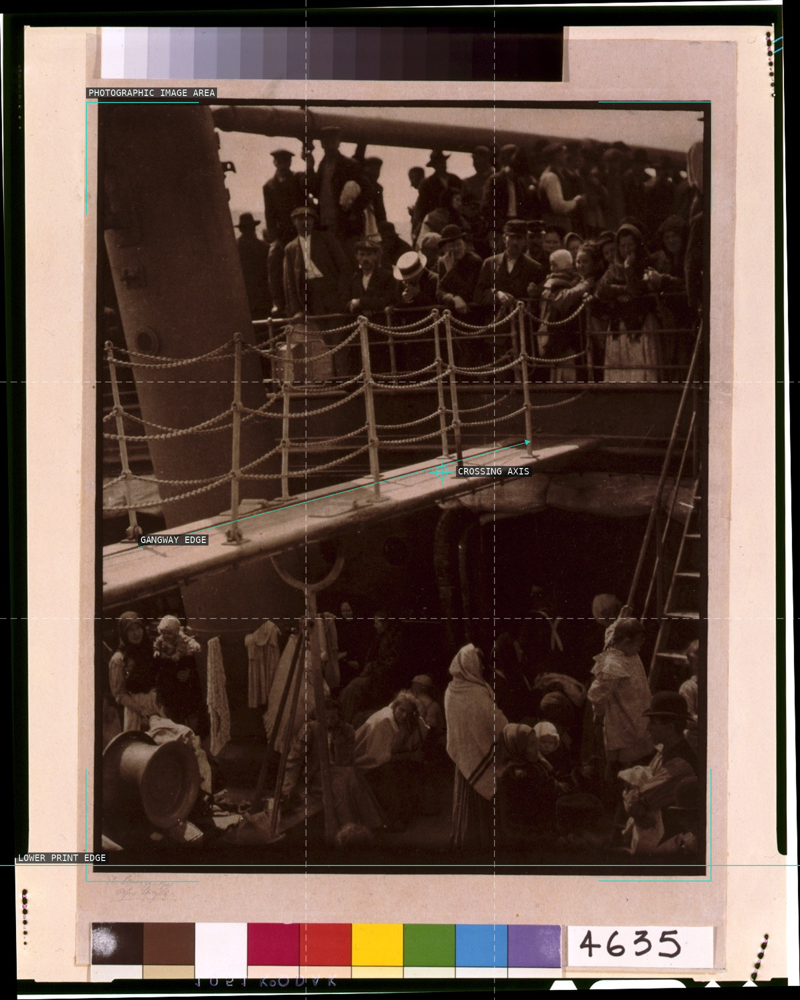
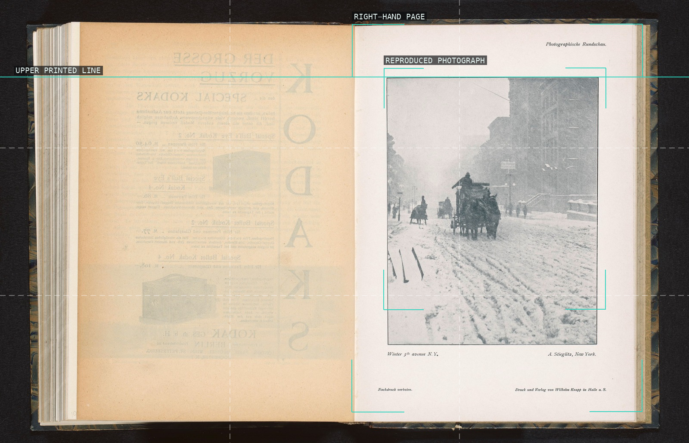
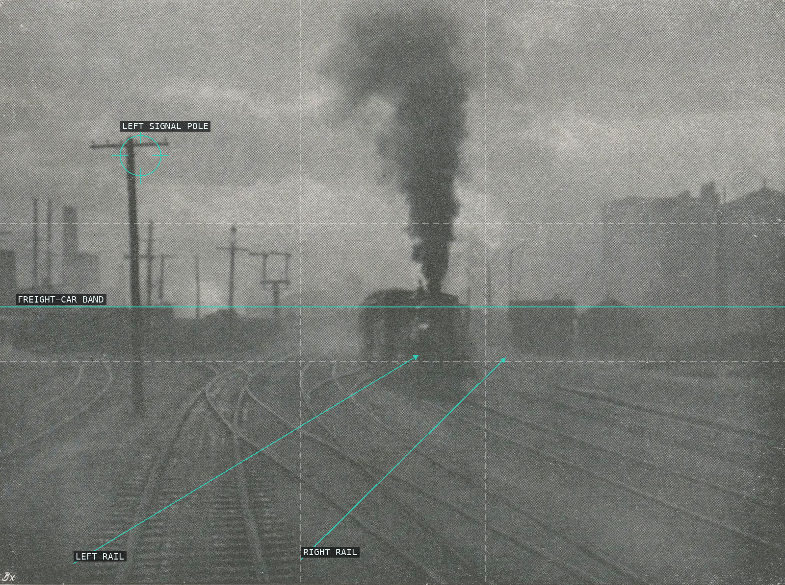
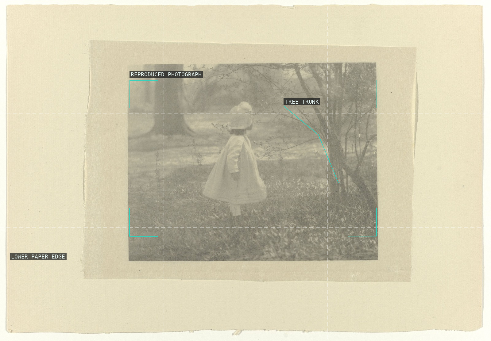
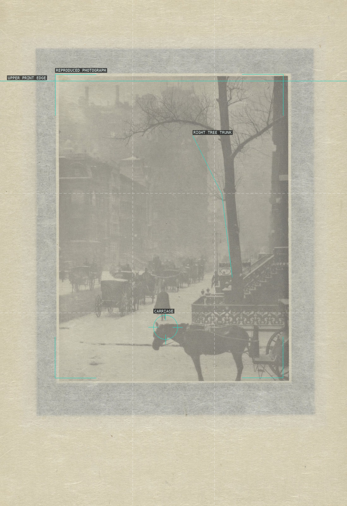
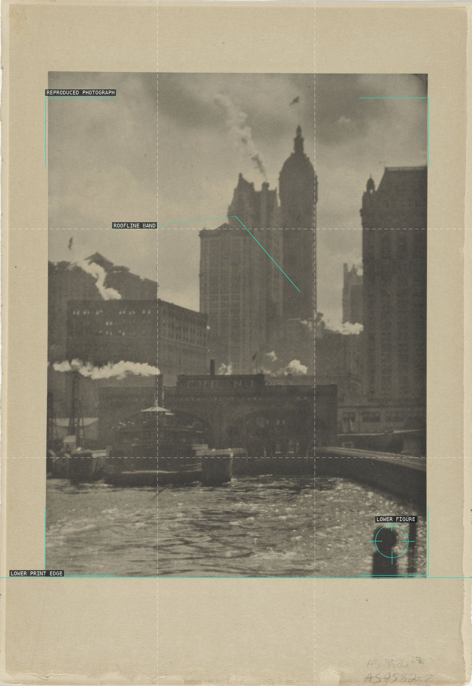
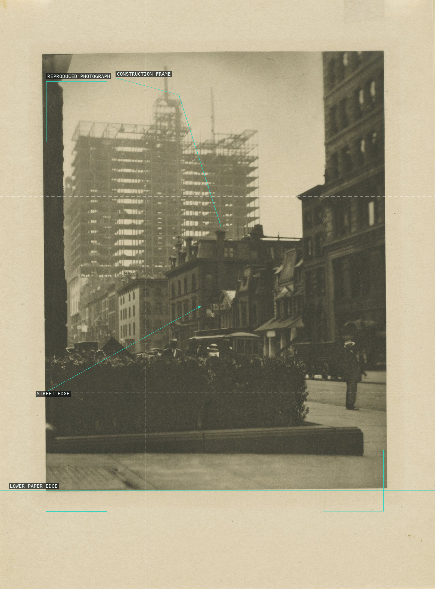
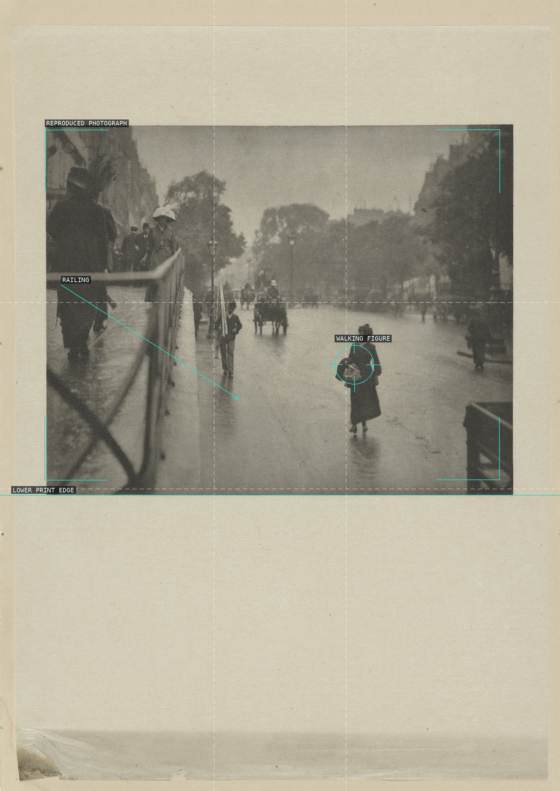
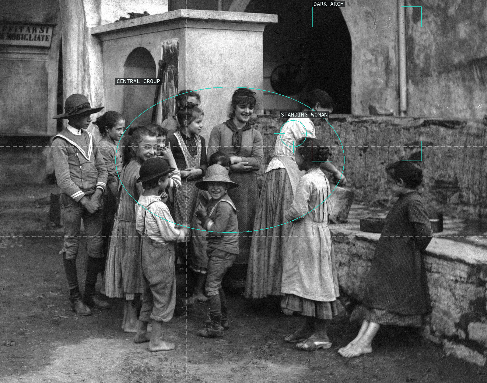

The reproduced print contains a packed field of figures, held between a descending gangway edge and the crossing rail system.

This scan records an open book: the snowy avenue appears as a small vertical image on the right-hand page, not as a full-bleed photograph.

Rails open from the foreground toward the locomotive while poles and freight cars compress the smoky middle distance.

A dark foreground trunk and the Flatiron's softened edge counter the pale, misty ground within the mounted print.

The supplied scan is a mounted reproduction; within it, a pale child and dark tree make the small image read as a restrained tonal scene.

This ingested file is a rotated scan of an illustrated spread; the small landscape reproduction and page structure must be kept distinct.

A horse and carriage cross the pale street inside a small mounted reproduction, bracketed by the dark tree and building masses.

The city rises in dark vertical masses above water and wharf activity; the small lower figure fixes the scale inside the mounted print.

The open construction frame rises beyond a low street of façades and vehicles, while the source sheet remains visibly around the image.

The wet boulevard opens around a single walking figure; the left railing supplies the image's strongest near-to-far direction.

The clustered figures gather around a standing woman, while the dark arch makes a large counterweight behind the group.